Laboratorio: registro y configuración básica de un AP en una Cisco Catalyst 9800
Un access point Cisco Catalyst no trabaja solo: necesita encontrar su controladora, autenticarse con ella y recibir de ella toda su configuración. En este laboratorio se registra un AP en una Catalyst 9800-CL (la controladora virtual) de tres formas (con la opción 43 de DHCP, por broadcast y desde la consola del AP) y se deja publicando dos SSID: uno corporativo con clave y uno de invitados con portal cautivo. Cada paso de la controladora tiene su versión por interfaz web (GUI) y por línea de comandos (CLI), y todo se ejecutó y verificó en equipos reales.
| Duración | Equipos | SSID | Software probado |
|---|---|---|---|
| ~60 min | Controladora C9800-CL, switch capa 3 y un AP Cisco | CY-Corp (WPA2-PSK) y CY-Invitados (portal cautivo) | IOS-XE 17.15.6 en la controladora |
Qué se necesita para montar el laboratorio
La controladora es virtual, así que lo único que tiene que ser físico es el AP. La tabla muestra el mínimo necesario y, como referencia, los equipos con que se probó esta guía:
| Componente | Mínimo necesario | Referencia usada en esta guía | ¿Físico o virtual? |
|---|---|---|---|
| Access point | Un AP Cisco con imagen CAPWAP compatible con IOS-XE 17.15 (Aironet Wave 2 o Catalyst 9100) | Cisco Aironet 2802I | Físico, obligatorio. Es el único equipo que no se puede emular. |
| Alimentación del AP | Inyector PoE o puerto de switch con PoE+ (802.3at) | Inyector PoE | Físico, va con el AP |
| Controladora | Catalyst 9800-CL en un hipervisor (Hyper-V, VMware ESXi o KVM) | 9800-CL 17.15.6 en Windows 11 + Hyper-V | Virtual |
| Switch | Switch capa 3 con VLAN, troncal 802.1Q y servidor DHCP | Cisco Catalyst C1000-24T-4X-L (sin PoE) | Físico. Lo puede reemplazar cualquier switch con esas funciones |
| Red de la controladora | Una LAN con salida a internet y un router donde se puedan crear rutas estáticas | Router de la casa, LAN 192.168.1.0/24 | Físico (el que ya exista) |
Versión mínima: si se quiere emular todo lo posible, basta con la controladora virtual y un AP. El AP se conecta a la misma LAN de la controladora y se registra por broadcast (opción B de la sección 3). Sin el switch no hay VLAN 20 y 30, así que los dos SSID salen en la LAN. Para separar el tráfico como en esta guía sí hace falta el switch.
Requisitos del equipo que corre la controladora
Para un laboratorio alcanza con el perfil más pequeño de la 9800-CL, Ultra-Low:
- Máquina virtual: 2 vCPU, 6 GB de memoria y 16 GB de disco.
- Equipo anfitrión: Windows 10/11 Pro o Windows Server con Hyper-V, y la virtualización (Intel VT-x o AMD-V) activada en la BIOS. Se recomiendan 16 GB de RAM en el anfitrión, para que le queden 6 GB a la máquina virtual sin afectar al resto del equipo.
- Red: la máquina virtual va en un switch virtual externo, unido a la tarjeta de red del anfitrión, para que quede en la misma LAN que el router.
- Imagen: la 9800-CL se descarga de software.cisco.com con una cuenta Cisco.
Objetivo
- Preparar el switch: VLAN de gestión, de invitados y corporativa, con DHCP para cada una.
- Registrar el AP en la controladora de tres formas: con la opción 43 de DHCP, por broadcast y forzándolo desde la consola del AP.
- Dar al AP su nombre y su controladora primaria.
- Publicar dos SSID con el modelo de perfiles y tags de la 9800, cada uno en su VLAN.
- Mostrar a los invitados un mensaje de bienvenida (portal cautivo) antes de dejarlos navegar.
Topología
Primero, cómo está cableado el laboratorio:

Y cómo se comunican los equipos entre sí:
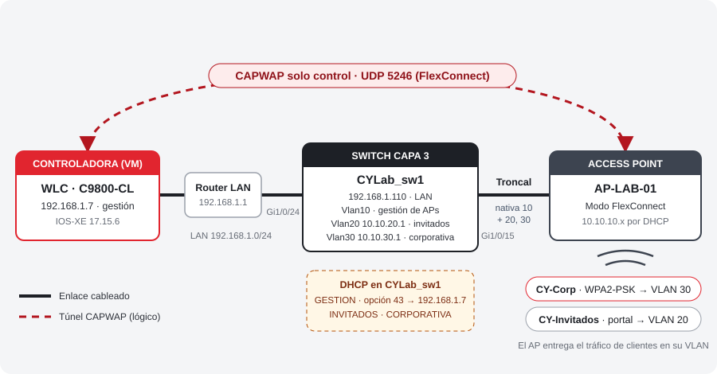
| VLAN | Nombre | Uso | Red | Puerta de enlace |
|---|---|---|---|---|
| 10 | GESTION | Gestión del switch y de los AP | 10.10.10.0/24 | 10.10.10.1 |
| 20 | INVITADOS | Clientes del SSID CY-Invitados | 10.10.20.0/24 | 10.10.20.1 |
| 30 | CORPORATIVA | Clientes del SSID CY-Corp | 10.10.30.0/24 | 10.10.30.1 |
| Equipo | Tipo | Dirección | Conexión |
|---|---|---|---|
| Controladora WLC | Catalyst 9800-CL (virtual), IOS-XE 17.15.6 | 192.168.1.7 | LAN 192.168.1.0/24, llega al switch por Gi1/0/24 |
| Switch CYLab_sw1 | Switch capa 3 | 192.168.1.110 | Gi1/0/24 hacia la LAN, Gi1/0/15 hacia el AP |
| AP-LAB-01 | Access point Cisco con imagen CAPWAP | 10.10.10.x por DHCP | Gi1/0/15 con inyector PoE |
¿Por qué FlexConnect?
Un AP registrado en una 9800 trabaja en uno de dos modos, y la diferencia está en por dónde viaja el tráfico de los clientes:
| Modo Local | FlexConnect con switching local | |
|---|---|---|
| Tráfico de los clientes | Viaja dentro del túnel CAPWAP hasta la controladora, y la controladora lo entrega en la red | El AP lo entrega directamente en la VLAN del switch donde está conectado |
| Qué viaja a la controladora | Control y datos | Solo el control (configuración, estado de los clientes) |
| Dónde viven las VLAN de los SSID | En la interfaz de la controladora | En el switch del AP |
| Uso típico | Campus, con la controladora en el mismo sitio | Sucursales y sitios remotos con una controladora central |
Lo decisivo en este laboratorio: se quiere que el tráfico de los clientes salga a internet por la red local, sin necesidad de llegar hasta la controladora. Con FlexConnect, un cliente de CY-Corp cae en la VLAN 30 del switch, el switch lo enruta al router y sale a internet; la controladora solo se entera de que el cliente se conectó. Además, la controladora es una máquina virtual que llega al switch a través del router de la LAN, por donde no pasan VLAN etiquetadas, así que en modo Local no podría entregar el tráfico en las VLAN 20 y 30.
Antes de empezar: la controladora lista
- La controladora con su configuración inicial (Day-0): usuario administrador, acceso HTTPS y SSH, interfaz de gestión inalámbrica, país y hora.
- En la 9800-CL, el certificado autofirmado (SSC) que usan los AP para el join. Las controladoras físicas ya traen uno de fábrica.
Antes de empezar, se confirma en la controladora que esos puntos ya están listos:
WLC (Cisco IOS-XE)
show wireless interface summary
show wireless management trustpoint
show wireless country configuredEn este laboratorio la salida muestra la interfaz de gestión inalámbrica con 192.168.1.7, el trustpoint WLC_WLC_TP de tipo SSC y el país CO - Colombia. Si el país ya está configurado no hay que tocar las radios.
1. Switch: VLAN, DHCP y puerto del AP
El switch hace tres trabajos: enruta entre las VLAN del laboratorio y la LAN de la controladora, entrega las direcciones por DHCP y conecta el AP con un troncal.
El pool de gestión lleva la opción 43, que le dice al AP dónde está la controladora. El valor es f1 (tipo), 04 (4 bytes por cada controladora) y la IP en hexadecimal: 192 = c0, 168 = a8, 1 = 01, 7 = 07. Resultado: f104.c0a8.0107.
CYLab_sw1 (Cisco IOS 15.2)
vlan 10
name GESTION
vlan 20
name INVITADOS
vlan 30
name CORPORATIVA
!
interface Vlan10
description Gestion switch y APs
ip address 10.10.10.1 255.255.255.0
no shutdown
interface Vlan20
description SSID invitados
ip address 10.10.20.1 255.255.255.0
no shutdown
interface Vlan30
description SSID corporativo
ip address 10.10.30.1 255.255.255.0
no shutdown
!
ip dhcp excluded-address 10.10.10.1 10.10.10.10
ip dhcp excluded-address 10.10.20.1 10.10.20.10
ip dhcp excluded-address 10.10.30.1 10.10.30.10
!
ip dhcp pool GESTION
network 10.10.10.0 255.255.255.0
default-router 10.10.10.1
dns-server 8.8.8.8
option 43 hex f104.c0a8.0107
ip dhcp pool INVITADOS
network 10.10.20.0 255.255.255.0
default-router 10.10.20.1
dns-server 8.8.8.8
ip dhcp pool CORPORATIVA
network 10.10.30.0 255.255.255.0
default-router 10.10.30.1
dns-server 8.8.8.8
!
interface GigabitEthernet1/0/15
description AP-LAB-01
switchport trunk native vlan 10
switchport trunk allowed vlan 10,20,30
switchport mode trunk
spanning-tree portfast trunk
end
write memoryEl puerto del AP es un troncal: la VLAN nativa (sin etiqueta) es la de gestión, por donde el AP pide su IP y habla con la controladora, y las VLAN 20 y 30 van etiquetadas para los SSID.
Para que el switch pase tráfico entre las VLAN y hacia la LAN, necesita sus funciones de enrutamiento. Por defecto un switch solo conmuta dentro de cada VLAN; ip routing lo convierte en un router entre sus interfaces VLAN. Además, se le da una ruta por defecto hacia el router de la LAN para todo lo que no conoce (internet y la controladora):
CYLab_sw1 (Cisco IOS 15.2)
ip routing
ip route 0.0.0.0 0.0.0.0 192.168.1.1
end
write memoryPara que las VLAN del laboratorio salgan a internet, el router de la LAN necesita saber que esas redes están detrás del switch. En el router se agregan tres rutas estáticas:
| Red destino | Máscara | Siguiente salto |
|---|---|---|
| 10.10.10.0 | 255.255.255.0 | 192.168.1.110 (CYLab_sw1) |
| 10.10.20.0 | 255.255.255.0 | 192.168.1.110 (CYLab_sw1) |
| 10.10.30.0 | 255.255.255.0 | 192.168.1.110 (CYLab_sw1) |
Así el router devuelve al switch el tráfico de esas redes y lo traduce (NAT) hacia internet. Para comprobarlo, desde el switch se hace ping a internet con origen en cada VLAN:
CYLab_sw1 (Cisco IOS 15.2)
ping 8.8.8.8 source Vlan10
ping 8.8.8.8 source Vlan20
ping 8.8.8.8 source Vlan30En el laboratorio las tres VLAN respondieron, y desde un equipo de la LAN el tracert a 10.10.30.1 pasa por 192.168.1.1 y luego por el switch.
2. Controladora: ruta hacia la VLAN de gestión
El AP está en 10.10.10.0/24 y la controladora en 192.168.1.0/24. Aunque el router de la LAN ya conoce esa red, conviene que la controladora la alcance directo por el switch, sin dar la vuelta por el router:
Por GUI: Configuration › Routing Protocols › Static Routing › + Add. Prefix 10.10.10.0, Prefix Mask 255.255.255.0, Route Path Next Hop IP y NextHop IP 192.168.1.110.
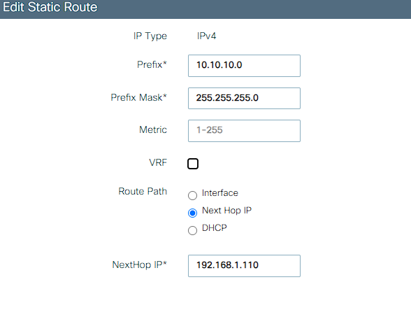
Por CLI:
WLC (Cisco IOS-XE 17.15)
configure terminal
ip route 10.10.10.0 255.255.255.0 192.168.1.110
end
write memory3. Registro del AP
Con la red lista, se conecta el AP. El registro sigue estas fases:
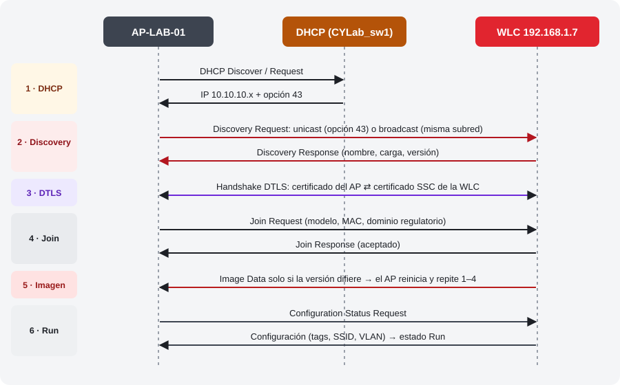
Para el descubrimiento, el AP usa en orden la controladora que ya conoce, la opción 43, el DNS (CISCO-CAPWAP-CONTROLLER) y un broadcast en su propia subred.
Usualmente los AP vienen de fábrica. Si el AP no tiene la configuración de fábrica (por ejemplo, ya estuvo registrado en otra controladora), primero se deja de fábrica siguiendo la guía oficial de Cisco: Reset the CAPWAP Configuration on IOS and ClickOS APs. Hecho esto, se registra con cualquiera de las opciones A, B o C.
Opción A: con opción 43
Es el método para cuando el AP y la controladora están en redes distintas, como en este laboratorio. No hay nada más que configurar: el pool GESTION del paso 1 ya entrega la opción 43.
- El AP pide IP en la VLAN 10 y recibe 10.10.10.12 con la opción 43.
- Envía el Discovery Request por unicast a 192.168.1.7.
- El switch lo enruta y la controladora responde por la ruta del paso 2.
Resultado en el laboratorio: después de borrar su configuración, el AP quedó registrado en unos 5 minutos.
Opción B: sin opción 43 (broadcast en la misma subred)
Si el AP está en la misma subred que la interfaz de gestión de la controladora, no necesita la opción 43: envía un Discovery Request por broadcast y la controladora responde. Es el método más simple, pero obliga a que AP y controladora compartan VLAN.
Para probarlo, el puerto del AP se pasó temporalmente a la VLAN de la LAN 192.168.1.0/24, donde está la controladora. Ahí el DHCP es el router de la LAN, que no entrega opción 43:
CYLab_sw1 (Cisco IOS 15.2)
interface GigabitEthernet1/0/15
switchport trunk native vlan <VLAN-de-la-LAN>
switchport trunk allowed vlan <VLAN-de-la-LAN>,10,20,30Resultado en el laboratorio: con la configuración borrada, el AP recibió 192.168.1.29 del router, encontró la controladora por broadcast y quedó registrado en unos 5 minutos. Luego el puerto volvió a la VLAN nativa 10 (configuración del paso 1).
Otro método sin opción 43 es un registro DNS CISCO-CAPWAP-CONTROLLER.<dominio> que apunte a la controladora. En switches que lo soportan también se puede reenviar el broadcast a otra subred con ip forward-protocol udp 5246. El switch de este laboratorio no tiene ese comando ni servidor DNS, por eso no se incluyen.
Opción C: forzar la controladora desde la consola del AP
Cuando el AP no puede descubrir la controladora por sí solo (sin opción 43, sin DNS y en otra subred), se le indica a mano. En el laboratorio se comprobó: sin la opción 43 en el pool GESTION y con la configuración borrada, el AP recibió 10.10.10.12 pero la controladora mostró Number of APs: 0 durante más de 5 minutos.
Un AP de fábrica que no se ha registrado no acepta SSH, así que este paso se hace por el puerto de consola: 9600 baudios, 8 bits, sin paridad, 1 bit de parada. Las credenciales de fábrica son Cisco / Cisco.
AP (consola, AP-COS)
AP78BC.1A6B.A124> enable
Password: Cisco
AP78BC.1A6B.A124# capwap ap primary-base WLC 192.168.1.7
AP78BC.1A6B.A124# show capwap client rcbEl primer valor es el nombre de la controladora (su hostname) y el segundo su IP de gestión. El AP guarda el dato y envía el Discovery Request directamente a esa IP, aunque esté en otra subred.
Si el AP ya está registrado, no hace falta la consola: la controladora primaria se fija desde la controladora, como se ve en el paso 4.
Verificar el registro
Por GUI: Monitoring › Wireless › AP Statistics, o Configuration › Wireless › Access Points.
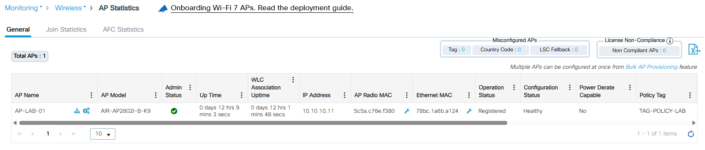
Por CLI:
WLC (Cisco IOS-XE 17.15)
show ap summary
show wireless stats ap join summary
show wireless stats ap discoverySalida real del laboratorio, recortada:
AP Name Ethernet MAC Radio MAC CC IP Address State
AP78BC.1A6B.A124 78bc.1a6b.a124 5c5a.c76e.f380 CO 10.10.10.12 Registered
Base MAC Ethernet MAC IP Address Status Last Failure Phase Last Disconnect Reason
5c5a.c76e.f380 78bc.1a6b.a124 10.10.10.12 Joined Run Wtp Clear configEl nombre por defecto del AP es AP seguido de su MAC Ethernet. Wtp Clear config solo indica que la última desconexión fue el borrado hecho a propósito.
4. Nombre y controladora primaria del AP
La controladora primaria queda guardada en el AP. Así, aunque un día cambie el DHCP, el AP sabe a dónde volver.
Por GUI: Configuration › Wireless › Access Points, clic en el AP. En la pestaña General se cambia AP Name a AP-LAB-01. En la pestaña High Availability, en Primary Controller, se escriben el nombre WLC y la IP 192.168.1.7, y se aplica con Update & Apply to Device.
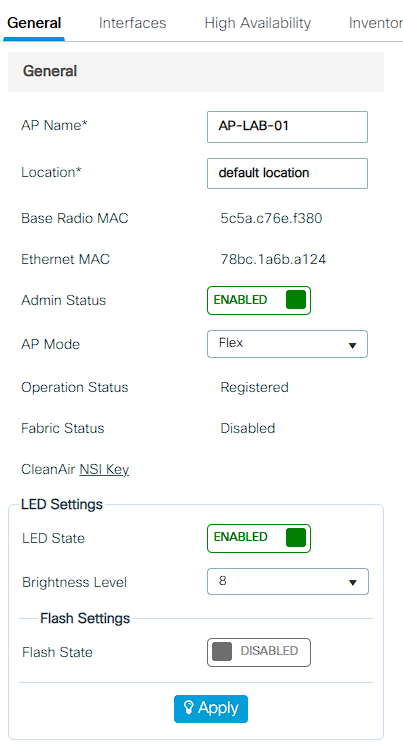
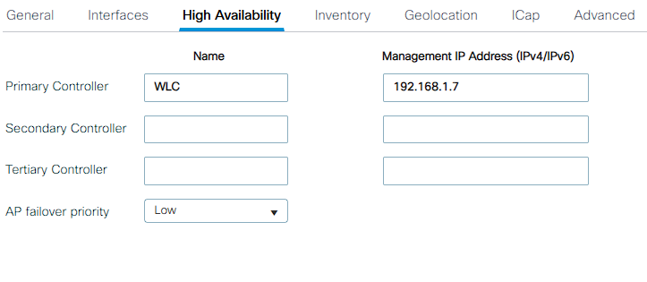
Por CLI (en modo privilegiado, no en modo configuración):
WLC (Cisco IOS-XE 17.15)
ap name AP78BC.1A6B.A124 name AP-LAB-01
ap name AP-LAB-01 controller primary WLC 192.168.1.7
write memoryEl nombre WLC es el hostname de la controladora; debe coincidir con el que muestra el prompt.
5. Perfiles, SSID y tags
La 9800 no asigna un SSID directamente a un AP. La configuración se agrupa en perfiles, los perfiles en tres tags, y los tags se asignan al AP:
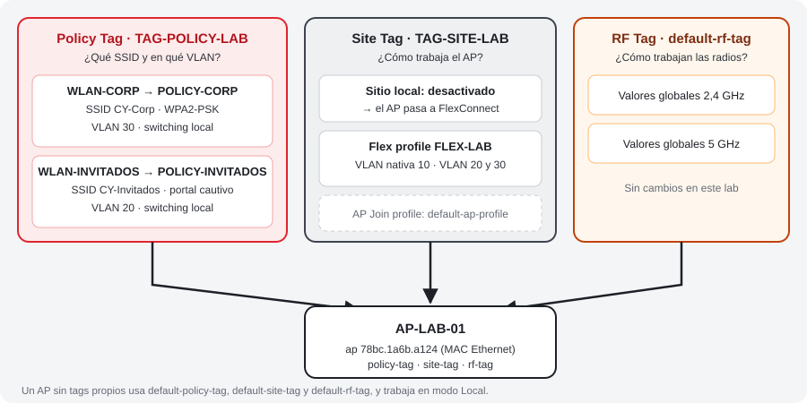
5.1 Flex profile: las VLAN que conoce el AP
Por GUI: Configuration › Tags & Profiles › Flex › + Add. En General: Name FLEX-LAB, Native VLAN ID 10. En la pestaña VLAN, + Add dos veces: INVITADOS con ID 20 y CORPORATIVA con ID 30.
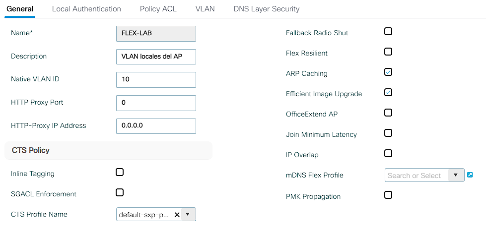
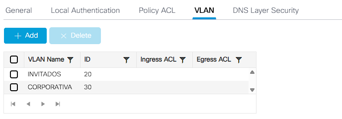
WLC (Cisco IOS-XE 17.15)
wireless profile flex FLEX-LAB
description "VLAN locales del AP"
native-vlan-id 10
vlan-name INVITADOS
vlan-id 20
vlan-name CORPORATIVA
vlan-id 305.2 Policy profiles: una política por SSID
La política dice en qué VLAN caen los clientes y que el tráfico se conmute en el AP (switching local).
Dos opciones de la política deciden por dónde va el tráfico, y ambas vienen activadas por defecto:
- Central Switching: activada, el tráfico de los clientes viaja dentro del túnel CAPWAP hasta la controladora, que lo entrega en su propia VLAN (comportamiento central, como en modo Local). Desactivada, el AP lo entrega directamente en la VLAN del switch.
- Central DHCP: activada, las solicitudes DHCP de los clientes también viajan a la controladora. Desactivada, el cliente pide su IP en la VLAN local y se la entrega el DHCP del switch.
Como en este laboratorio las VLAN 20 y 30 y sus pools DHCP están en el switch, las dos se desactivan. Si quedaran activas, el tráfico intentaría llegar a una controladora que no tiene esas VLAN y el cliente se quedaría sin IP.
Por GUI: Configuration › Tags & Profiles › Policy › + Add. En General: Name POLICY-CORP, Status Enabled, y se desmarcan Central Switching y Central DHCP. En Access Policies, VLAN/VLAN Group 30. Se repite para POLICY-INVITADOS con la VLAN 20.
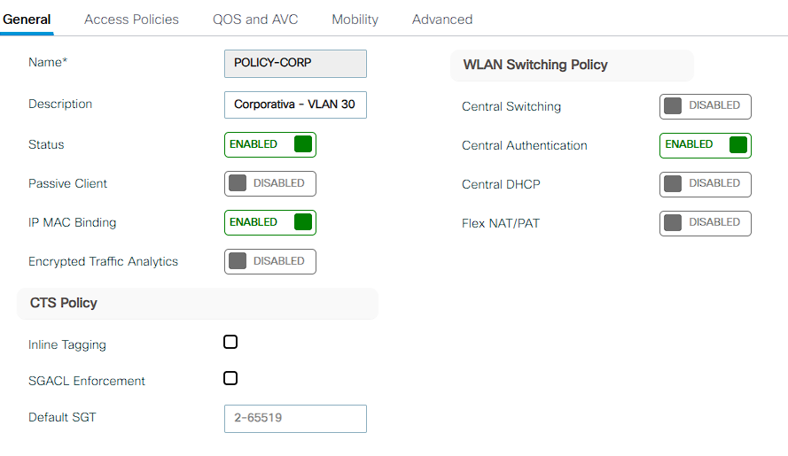
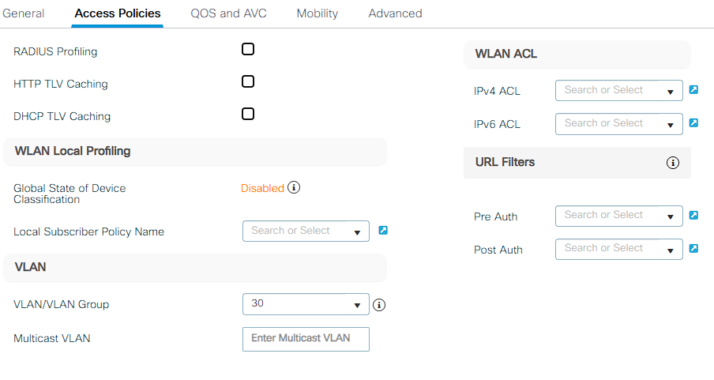
WLC (Cisco IOS-XE 17.15)
wireless profile policy POLICY-CORP
description "Corporativa - VLAN 30"
no central switching
no central dhcp
vlan 30
no shutdown
!
wireless profile policy POLICY-INVITADOS
description "Invitados - VLAN 20"
no central switching
no central dhcp
vlan 20
no shutdown5.3 WLAN: los dos SSID
Por GUI: Configuration › Tags & Profiles › WLANs › + Add.
- CY-Corp: en General, Profile Name
WLAN-CORP, SSIDCY-Corp, WLAN ID1, Status Enabled. En Security › Layer2: modo WPA + WPA2, con WPA2 Policy y cifrado AES (CCMP128); en Auth Key Mgmt se desmarca 802.1X y se marca PSK; en Pre-Shared Key, formato ASCII y la claveCYSolutions. - CY-Invitados: Profile Name
WLAN-INVITADOS, SSIDCY-Invitados, WLAN ID2, Status Enabled. En Security › Layer2, Layer 2 Security Mode None (red abierta).
Por qué esa seguridad en CY-Corp:
- WPA + WPA2 con solo WPA2 Policy: el modo agrupa las dos versiones, pero solo se marca WPA2. WPA (la primera versión, con TKIP) es antigua y vulnerable; WPA2 la soportan prácticamente todos los clientes.
- Cifrado AES (CCMP128): es el cifrado de WPA2. Usa AES, el mismo estándar que se usa en VPN y en banca, con llaves de 128 bits; hoy no tiene ataques prácticos conocidos. Cada cliente negocia llaves propias en el saludo inicial (4-way handshake), así que un cliente no puede leer el tráfico de otro aunque compartan la clave.
- PSK en lugar de 802.1X: 802.1X autentica a cada usuario contra un servidor RADIUS (un NAC como Cisco ISE o ClearPass). En este laboratorio no se quiere un NAC sobre la red, así que se desmarca 802.1X y todos usan una clave compartida (PSK).
Por qué None en CY-Invitados: la seguridad de capa 2 actúa antes de que el cliente tenga IP, al asociarse con el AP. Si pidiera una clave, el invitado tendría que conocerla antes de ver el mensaje. El portal cautivo trabaja en capa 3: el cliente se asocia sin clave, recibe IP, y cuando abre el navegador la controladora intercepta esa primera petición web y le muestra el portal. Hasta que acepta, solo puede usar DHCP y DNS. Por eso la capa 2 queda abierta y el control lo hace el portal (paso 6).
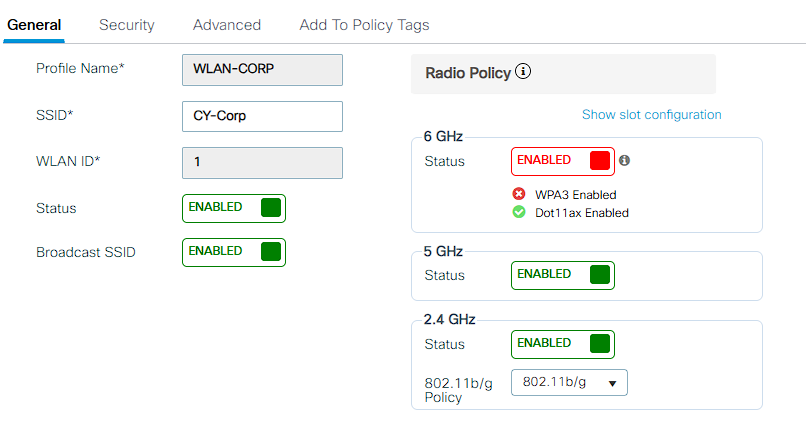
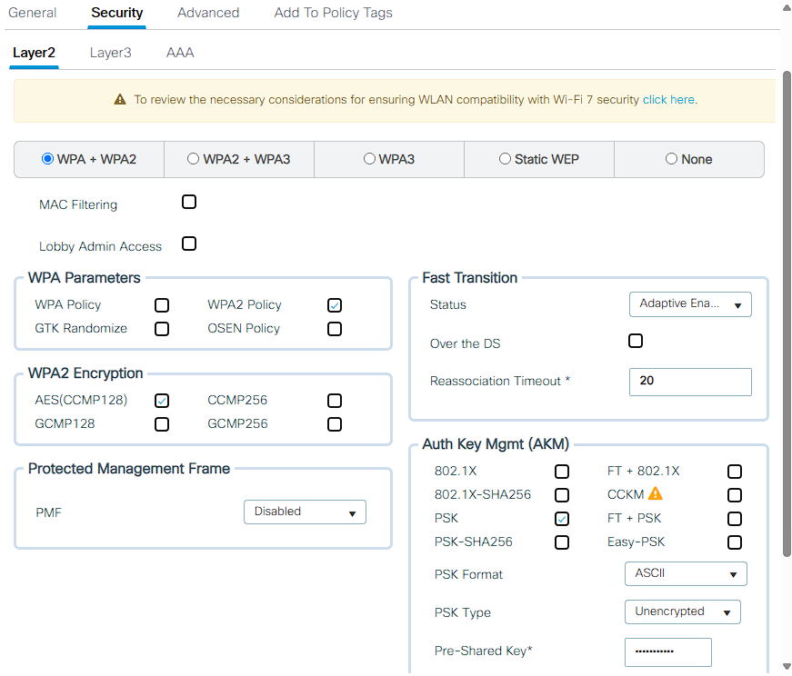
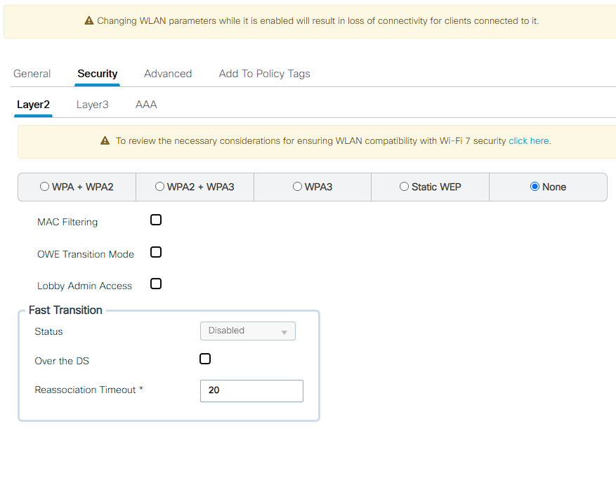
WLC (Cisco IOS-XE 17.15)
wlan WLAN-CORP 1 CY-Corp
no security wpa akm dot1x
security wpa akm psk
security wpa psk set-key ascii 0 CYSolutions
no shutdown
!
wlan WLAN-INVITADOS 2 CY-Invitados
no security wpa
no security wpa wpa2
no security wpa akm dot1x
no security ft adaptive
no shutdownUna WLAN nueva nace con WPA2 y 802.1X. Por eso en el SSID corporativo se cambia 802.1X por PSK, y al de invitados se le quita la seguridad de capa 2.
5.4 Policy Tag y Site Tag
Por GUI: Configuration › Tags & Profiles › Tags.
- Pestaña Policy › + Add: Name
TAG-POLICY-LAB. En WLAN-POLICY Maps › + Add, una a una:WLAN-CORP→POLICY-CORPyWLAN-INVITADOS→POLICY-INVITADOS. - Pestaña Site › + Add: Name
TAG-SITE-LAB; se desmarca Enable Local Site y en Flex Profile se eligeFLEX-LAB. El AP Join Profile queda endefault-ap-profile.
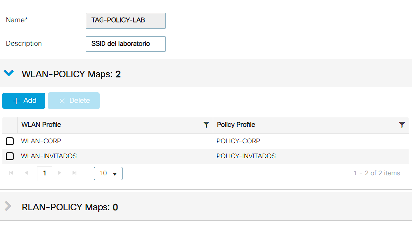
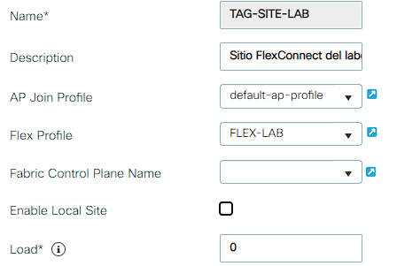
WLC (Cisco IOS-XE 17.15)
wireless tag policy TAG-POLICY-LAB
description "SSID del laboratorio"
wlan WLAN-CORP policy POLICY-CORP
wlan WLAN-INVITADOS policy POLICY-INVITADOS
!
wireless tag site TAG-SITE-LAB
description "Sitio FlexConnect del laboratorio"
no local-site
flex-profile FLEX-LABDesmarcar el sitio local es lo que convierte el AP en FlexConnect.
5.5 Asignar los tags al AP
Corte breve: al cambiar el Site Tag o el Policy Tag, el AP cierra y vuelve a levantar su conexión con la controladora. En el laboratorio volvió en menos de un minuto. En producción conviene hacerlo en una ventana de mantenimiento.
Por GUI: Configuration › Tags & Profiles › Tags › AP › Static › + Add. AP MAC Address 78bc.1a6b.a124 (la MAC Ethernet que muestra show ap summary), Policy Tag TAG-POLICY-LAB, Site Tag TAG-SITE-LAB, RF Tag default-rf-tag.
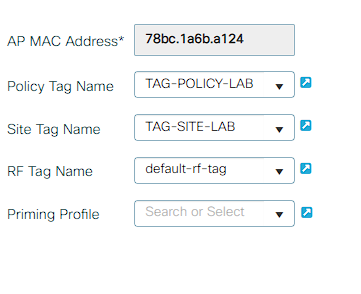
WLC (Cisco IOS-XE 17.15)
ap 78bc.1a6b.a124
policy-tag TAG-POLICY-LAB
site-tag TAG-SITE-LAB
rf-tag default-rf-tag
end
write memoryEsta es una asignación estática por MAC: queda escrita en la configuración de la controladora (el bloque ap 78bc.1a6b.a124), no en el AP. Por eso, si el AP se reinicia o se deja de fábrica, al registrarse de nuevo la controladora reconoce su MAC y le vuelve a dar los mismos tags.
No es la única forma de darle tags a un AP, y no todas sobreviven a un reset de fábrica. La controladora decide qué tags usa según su origen (Tag Source), en este orden de prioridad:
| Prioridad | Origen | Dónde queda guardado | ¿Sobrevive a un reset de fábrica del AP? |
|---|---|---|---|
| 1 | Static (la de esta guía) | En la controladora, por la MAC Ethernet del AP | Sí |
| 2 | Location | En la controladora, por la ubicación asignada al AP | Sí |
| 3 | Filter | En la controladora, como regla por nombre del AP (expresión regular) | Solo si el AP vuelve con un nombre que cumpla la regla |
| 4 | AP | En la memoria del propio AP | No: el reset la borra |
| 5 | Default | Tags por defecto (default-policy-tag, etc.) | Es lo que recibe un AP sin ninguna de las anteriores: se registra, pero no publica los SSID del laboratorio |
Para confirmar de dónde tomó el AP sus tags se usa show ap tag summary: en este laboratorio la columna Tag Source dice Static. El orden de prioridad se ve con show ap tag sources.
6. Portal cautivo para invitados
Para que los invitados vean un mensaje antes de navegar, el SSID CY-Invitados usa autenticación web local de tipo consent. Al conectarse, el teléfono abre una página con el mensaje y un botón para aceptar. No se pide usuario ni clave.
6.1 Dirección virtual del portal
La controladora sirve el portal desde una IP virtual que no existe en la red. Cisco recomienda una del rango de documentación, como 192.0.2.1.
Por GUI: Configuration › Security › Web Auth, clic en global. En Virtual IPv4 Address se escribe 192.0.2.1 y se aplica con Update & Apply.
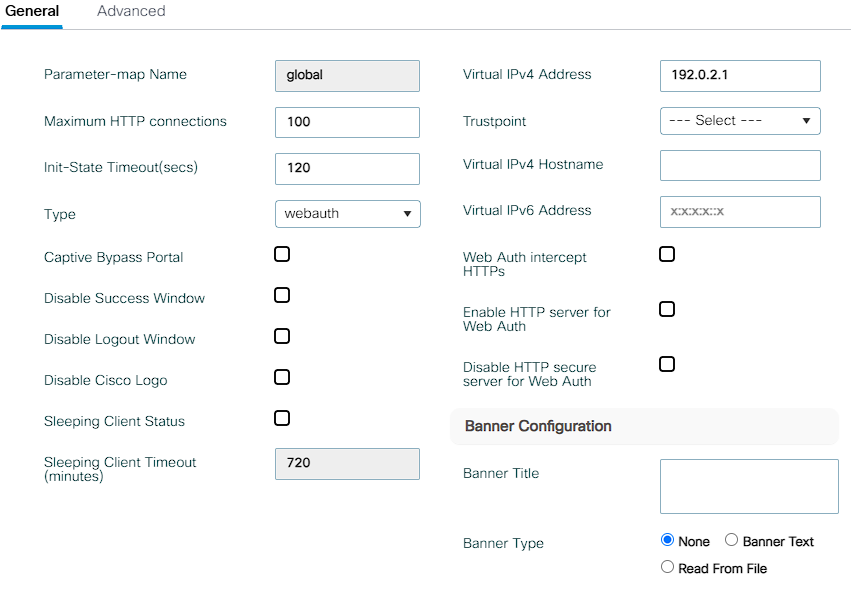
6.2 Parameter map con el mensaje
Por GUI: en la misma pantalla, + Add. Parameter-map name PORTAL-INVITADOS, Type consent. En Banner Configuration: Banner Title con el título, Banner Type Banner Text y en Banner Text el mensaje, con Enter entre frases para que salga en varias líneas.
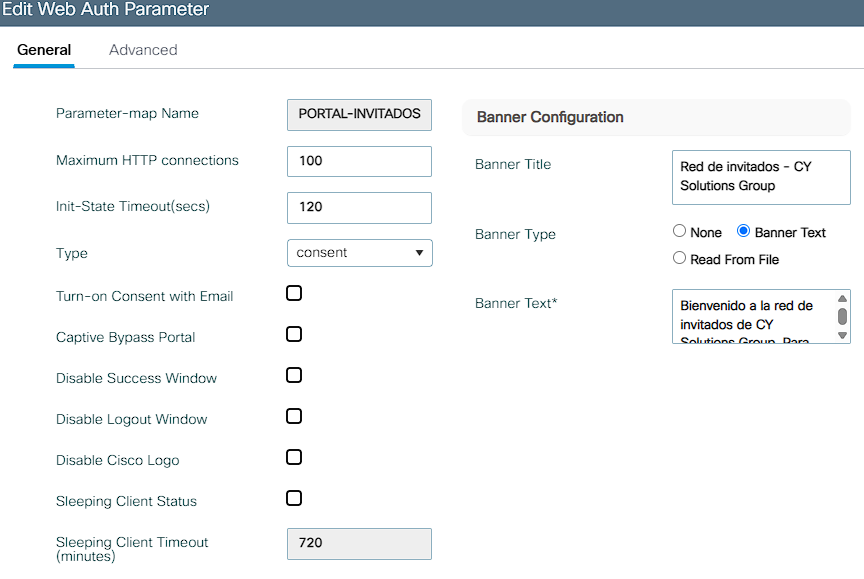
6.3 Aplicar el portal al SSID de invitados
Por GUI: Configuration › Tags & Profiles › WLANs, clic en WLAN-INVITADOS. En Security › Layer3 se marca Web Policy y en Web Auth Parameter Map se elige PORTAL-INVITADOS. La seguridad de capa 2 sigue en None.
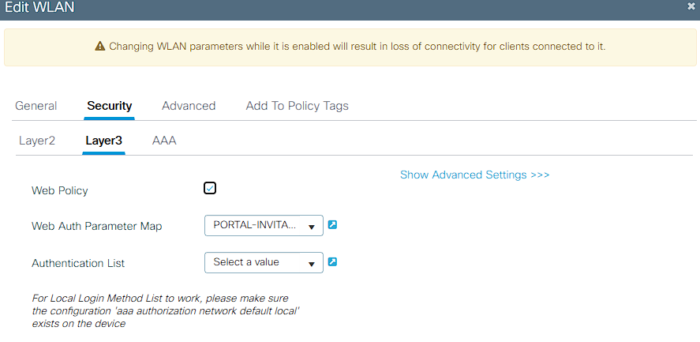
Por CLI (las tres partes):
WLC (Cisco IOS-XE 17.15)
parameter-map type webauth global
virtual-ip ipv4 192.0.2.1
!
parameter-map type webauth PORTAL-INVITADOS
type consent
banner title #Red de invitados - CY Solutions Group#
banner text #Bienvenido a la red de invitados de CY Solutions Group.
Esta red es para uso personal y responsable.
El trafico puede ser monitoreado.
Para navegar, acepte las condiciones de uso.#
!
wlan WLAN-INVITADOS 2 CY-Invitados
shutdown
security web-auth
security web-auth parameter-map PORTAL-INVITADOS
no shutdown
end
write memoryEl carácter # marca el inicio y el fin del mensaje, así que no debe usarse dentro del texto. El mensaje puede ocupar varias líneas: la controladora sigue leyendo hasta encontrar el segundo #. Conviene escribirlo en frases cortas, una por línea; el portal no interpreta HTML, así que etiquetas como <br> aparecen escritas tal cual. La controladora lo guarda con su propio delimitador (^C). La WLAN se apaga un momento mientras cambia su seguridad y los invitados conectados se desconectan.
WLC (Cisco IOS-XE 17.15)
show wlan name WLAN-INVITADOS | include Status|Webauth Parameter Map
show running-config | begin parameter-map type webauth PORTAL-INVITADOSAsí lo vive el invitado en el teléfono (Android):
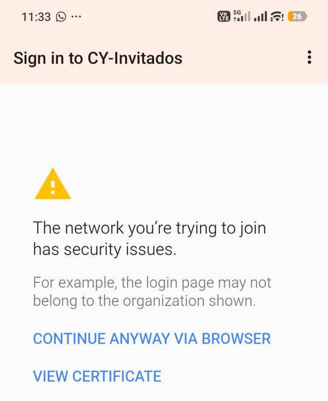
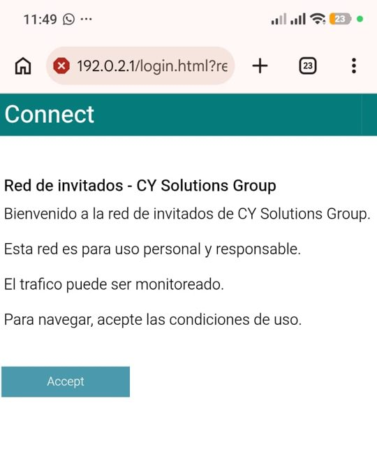
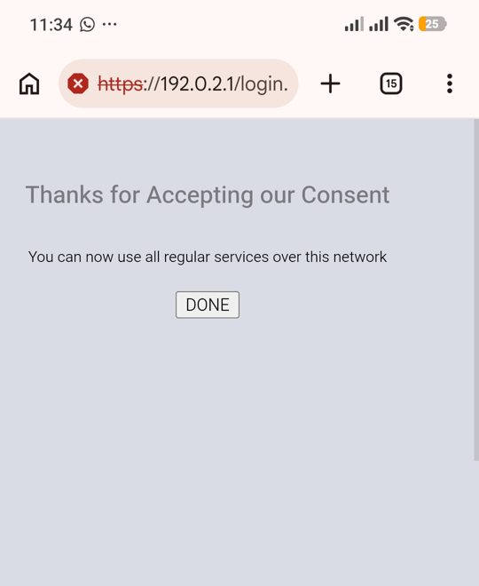
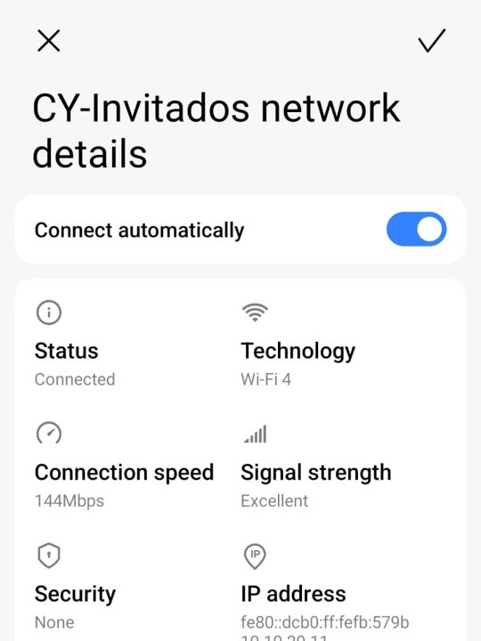
¿Por qué aparece un error de certificado?
El portal se sirve por HTTPS desde la IP virtual 192.0.2.1, y para cifrar esa conexión la controladora presenta un certificado. En este laboratorio es un certificado autofirmado: lo generó la propia controladora, no una entidad certificadora (CA) en la que confíe el teléfono. Además está emitido para una IP y no para un nombre de dominio. El teléfono no puede comprobar quién está detrás de la página, y por eso muestra el aviso The network you’re trying to join has security issues y la X roja junto a la dirección.
La conexión sí va cifrada; lo que falta es que el teléfono pueda verificar la identidad del servidor.
En este laboratorio no es necesario solucionarlo. El portal es de tipo consent: el invitado solo pulsa Accept y no escribe usuario, clave ni ningún otro dato. La red es de pruebas y se controla de punta a punta, así que basta con continuar en el navegador.
En una red de invitados real sí conviene quitar el aviso, para que los usuarios no se acostumbren a ignorar alertas de seguridad. Para eso se necesita:
- Un nombre de dominio para el portal (por ejemplo,
portal.empresa.com), configurado en Virtual IPv4 Hostname del parameter map global y resuelto por DNS a la IP virtual. - Un certificado para ese nombre, emitido por una CA pública, importado en la controladora y elegido en el campo Trustpoint del parameter map global.
Eso sale del alcance de esta guía.
7. Verificación final y prueba con un cliente
WLC (Cisco IOS-XE 17.15)
show ap tag summary
show ap name AP-LAB-01 config general | include Primary Cisco Controller|AP Mode
show ap name AP-LAB-01 wlan dot11 5ghz
show wlan summarySalida real del laboratorio, recortada:
AP Name AP Mac Site Tag Name Policy Tag Name RF Tag Name Misconfigured Tag Source
AP-LAB-01 78bc.1a6b.a124 TAG-SITE-LAB TAG-POLICY-LAB default-rf-tag No Static
Primary Cisco Controller Name : WLC
Primary Cisco Controller IP Address : 192.168.1.7
AP Mode : FlexConnect
ID Profile Name SSID Status Security
1 WLAN-CORP CY-Corp UP [WPA2][PSK][AES]
2 WLAN-INVITADOS CY-Invitados UP [open],[Web Auth]Se conecta un teléfono a CY-Corp con la clave CYSolutions: debe recibir una IP de 10.10.30.0/24. En CY-Invitados, sin clave, debe aparecer el portal con el mensaje y, al aceptar, recibir una IP de 10.10.20.0/24 y navegar.
Por GUI: Monitoring › Wireless › Clients.
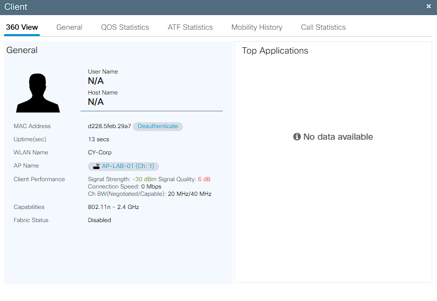
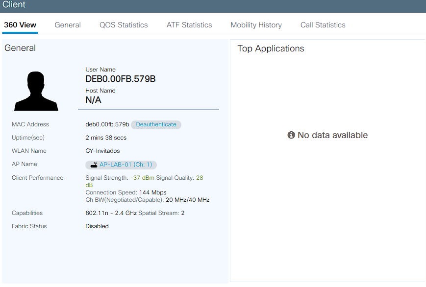
WLC y CYLab_sw1
! En la controladora
show wireless client summary
! En el switch: las IP entregadas a los clientes
show ip dhcp bindingResultado en el laboratorio: los dos teléfonos quedaron en estado Run; el de CY-Invitados con método Web Auth, porque pasó por el portal.
MAC Address AP Name Type ID State Protocol Method
d228.5feb.29a7 AP-LAB-01 WLAN 1 Run 11n(2.4) None
deb0.00fb.579b AP-LAB-01 WLAN 2 Run 11n(2.4) Web AuthSolución de problemas
| Síntoma | Causa probable | Qué revisar |
|---|---|---|
| El AP no enciende | Sin PoE: el switch del laboratorio no lo tiene | Inyector PoE o switch con PoE |
| El AP no recibe IP | VLAN nativa del troncal o pool DHCP | show ip dhcp binding, show interfaces trunk |
| Tiene IP pero no aparece en la controladora | Opción 43 mal calculada o falta la ruta de regreso en la controladora | Valor hexadecimal del pool; show ip route static en la controladora |
| El AP sigue buscando una controladora vieja | Recuerda la última controladora a la que se unió | show ap name <AP> config general; corregir la controladora primaria o clear ap config |
| Error DTLS en el join summary | Reloj desfasado o falta el certificado SSC (9800-CL) | show clock, show wireless management trustpoint |
| Registrado pero sin SSID | AP con tags por defecto o WLAN apagada | show ap tag summary, show wlan summary |
| El portal de invitados no aparece | Falta la IP virtual, o el cliente no resuelve DNS ni llega a internet | show running-config | section parameter-map type webauth global; rutas del router hacia 10.10.20.0/24 |
| El cliente se conecta pero no recibe IP | VLAN ausente en el Flex profile o en el troncal del AP | Pestaña VLAN de FLEX-LAB; switchport trunk allowed vlan en Gi1/0/15 |
Para ver cada fase del registro de un AP, la controladora guarda trazas por MAC. En la GUI: Troubleshooting › Radioactive Trace. Por CLI, con la MAC de radio del AP:
show logging profile wireless filter mac 5c5a.c76e.f380 to-file bootflash:join-ap.log
more bootflash:join-ap.logDocumentación oficial de Cisco
- Installing the Catalyst 9800-CL in Microsoft Hyper-V: requisitos de la máquina virtual y perfiles.
- Cisco Catalyst 9800-CL Wireless Controller for Cloud Deployment Guide: dimensionamiento y certificado SSC.
- Configure DHCP Option 43 for Lightweight Access Points: formato TLV y ejemplos para IOS y Windows.
- Understand the AP Join Process with the Catalyst 9800 WLC: métodos de descubrimiento y fases del join.
- Understand Catalyst 9800 Wireless Controllers Configuration Model: perfiles y tags.
- Understand FlexConnect on Catalyst 9800 Wireless Controller: Flex profile, switching local y Site Tag.
- Troubleshoot Catalyst 9800 AP Join or Disconnection Issues Flow: diagnóstico paso a paso.
- Web-Based Authentication on Cisco Catalyst 9800: Configure Local Web Authentication: parameter maps, consent y mensaje (banner).
- Cisco Catalyst 9800 Series Configuration Best Practices: recomendaciones generales de diseño.
Conclusiones
Con la VLAN de gestión y la opción 43, cualquier AP Cisco que se conecte a un puerto como Gi1/0/15 encuentra la controladora y se registra solo. Pero registrarse no es lo mismo que publicar los SSID: un AP nuevo llega con los tags por defecto y no transmite CY-Corp ni CY-Invitados. Una vez el AP aparece en la controladora, se le asignan sus tags (paso 5.5) y solo entonces publica los dos SSID en sus VLAN, con el mensaje de bienvenida para los invitados. Como esa asignación es estática por MAC y queda guardada en la controladora, se hace una sola vez por AP: si ese mismo AP se reinicia o se deja de fábrica, al volver a registrarse recupera sus tags. Un AP distinto, con otra MAC, necesita su propia asignación.
A partir de aquí lo natural es pasar el SSID corporativo de PSK a 802.1X con un servidor RADIUS, crear un AP Join profile propio (credenciales y SSH del AP) y usar reglas de etiquetado automático (por ejemplo, por nombre del AP) para no asignar los tags AP por AP.